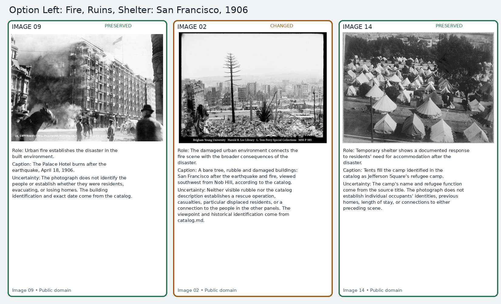
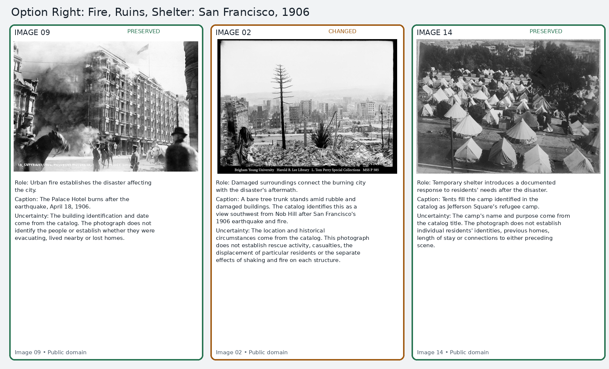
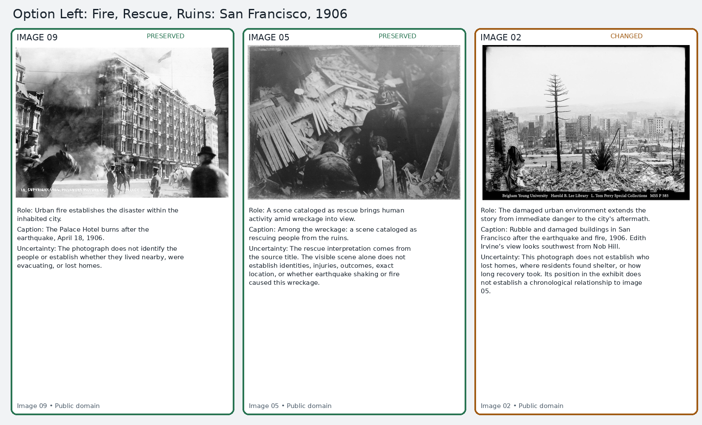
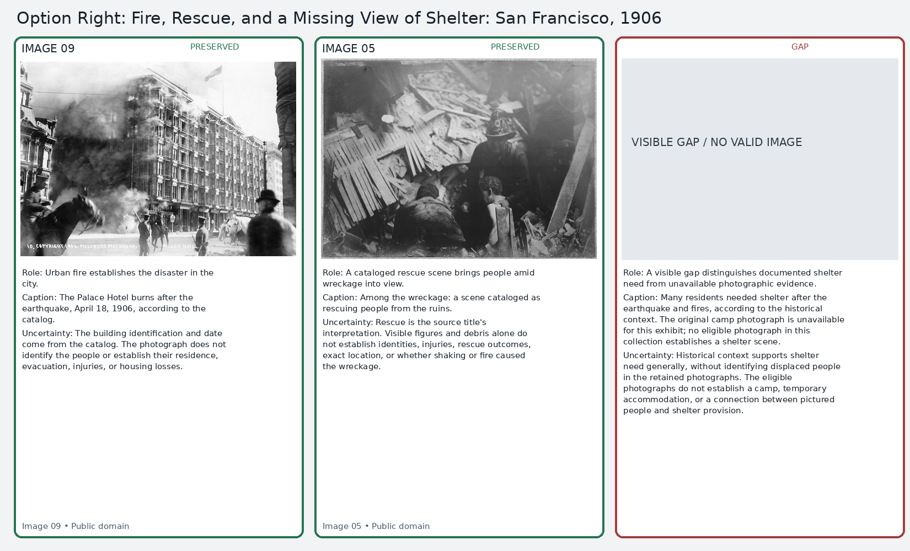

Blind visual comparison
Review the original, then compare the two anonymous adaptations. Which better preserves a truthful and meaningful exhibit? Is either misleading? Would you prefer a changed story, a visible gap, or neither? The alternatives have the same available source material; no participant feedback has been collected.

Case B
The sole cataloged rescue image 05 is unavailable.
Option Left

Option Right

Case C
The sole cataloged shelter image 14 is unavailable.
Option Left

Option Right
